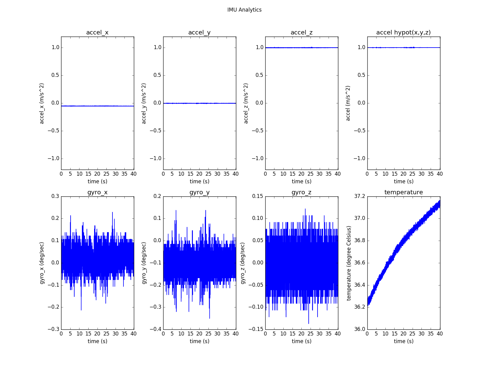

分析 IMU 数据¶
SDK 提供了 IMU 数据分析工具 imu_analytics.py. 工具的详细信息见 tools/README.md
注解
需要使用 tools 中提供的 record 工具或 rosbag 录制数据集。
分析工具支持python 2.7 。
运行工具之前需要 pip install -r requirements.txt 。
Linux 系统运行命令:
$ python tools/analytics/imu_analytics.py -i dataset -c tools/config/mynteye/mynteye_config.yaml -al=-1.2,1.2 -gl= -gdu=d -gsu=d -kl=
Linux 系统上的结果参考:
$ python tools/analytics/imu_analytics.py -i dataset -c tools/config/mynteye/mynteye_config.yaml -al=-1.2,1.2 -gl= -gdu=d -gsu=d -kl=
imu analytics ...
input: dataset
outdir: dataset
gyro_limits: None
accel_limits: [(-1.2, 1.2), (-1.2, 1.2), (-1.2, 1.2), (-1.2, 1.2)]
time_unit: None
time_limits: None
auto: False
gyro_show_unit: d
gyro_data_unit: d
temp_limits: None
open dataset ...
imu: 20040, temp: 20040
timebeg: 4.384450, timeend: 44.615550, duration: 40.231100
save figure to:
dataset/imu_analytics.png
imu analytics done
分析结果图保存在 dataset 目录中. 如下:

另外，可以使用 -h 参数查看工具详细参数选项.
$ python tools/analytics/imu_analytics.py -h